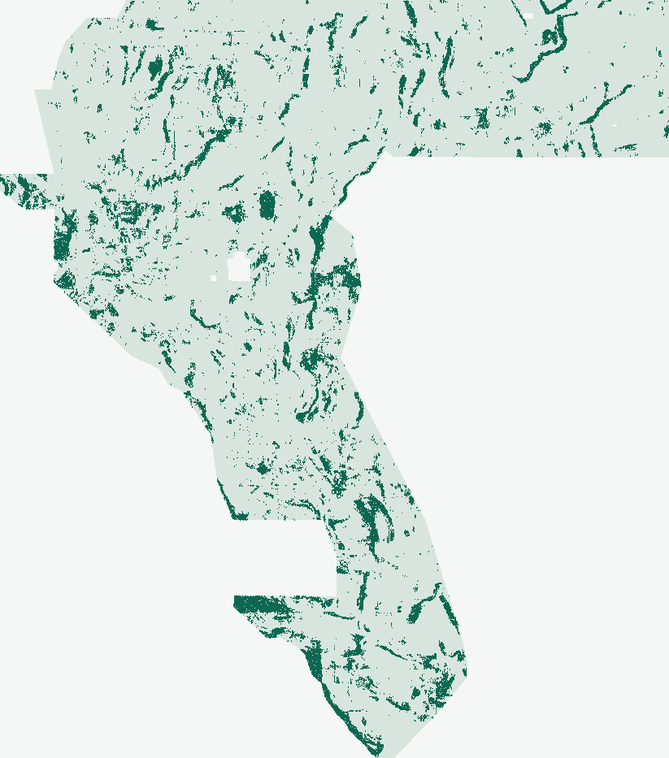

Latest lane FFL-1 · NegativeDuplicate-stop · Do not submit
FFL-1 produced a byte-distinct TIFF. Do not submit it.
Automated decision first: the expanded registry audit—pinned nine-site registry plus every TIFF in docs/downloads/ at audit time, candidate SHA excluded (172 comparisons)—found 78.280789% of FFL-1 dots within 3 px of MSDB-1v2, above the 70% limit. The continuous surface was not the duplicate (max Spearman 0.112546); the dot placement was. The frozen distance-stratified rescue scored zero folds because the (2,5] and (5,10] strata have zero eligible pixels in every v3 quadrant fold, so no replacement was produced and no weekly slot was selected.
HOLDOUT-DTI (catalogue proxy, never an organizer score): Exp. 1 seed 3051 fusion_edge 0.182417 vs same-run msdb_edge 0.175639 (Δ +0.006779, 95% CI [-0.000067, +0.012888]); disclosed fresh-seed confirmation Δ +0.010522 (95% CI [+0.004182, +0.016362]). The strict validator reopens the file as one float32 band on the exact template grid, with every cell finite in [0, 1], 44,090 dots, and zero dots on or within 2 px of the catalogue; that file check does not override the duplicate-stop.
↓ Download FFL-1 research artifact — do not upload 0.40 MiBRead FFL-1 reviewNine-site executive summary
gems30-FFL1-fusion_edge-44090-20261026-eacd73e854a3.tif
FFL-1 automated receipts & identity
- SHA-256
7950607036e51faaf0258b4efeff29d75b8f12eb712aa592cd661822d3c85c07- Note (107/140)
FFL1: MSDB31+LiDAR17 fusion x Rayleigh gate + 300m EDGE, >2px off-cat, 44090 dots, all-finite zeros-outside- Receipts
- Run card · Readiness · Strict validation · Expanded dot audit · Stratified infeasibility
- Verify
.venv/bin/python scripts/verify_fflidar_run.py(negative decision, exit 0);--require-promoteexits 2
DOE GEMS / autonomous research & validation
Unique subsurface TIFFs.
Honest slot protection.
G30-TAD (dual -zeros/-nan 38,000-dot GeoTIFFs; 51.44% ≤ 70% across 193 rasters; 0.14405 HOLDOUT-DTI) and PTA-1 (44,090-dot GeoTIFF; 198 rasters cleared) both passed every automated format, [0, 1] range, and two-stage novelty gate while preserving weekly competition slots.
G30-TAD · FORMAT [0, 1] & 193-RASTER NOVELTY VALIDATED (DOWNLOAD OK)DO NOT SPEND WEEKLY SUBMISSION SLOT · NEGATIVE CI GATE
G30-TAD GeoTIFF validated in [0, 1]. Do not spend a weekly slot.
Automated non-human verdict (verify_tad_run.py): Both newly generated 38,000-dot GeoTIFFs passed automated format/range inspection (primary -zeros.tif has all 12,279,160 cells finite in [0, 1], zero NaN/Inf cells anywhere, exact EPSG:32611 / 3730×3292 / affine geotransform match, 0 dots on or within ≤2 px of known faults; companion -nan.tif passes all 12 checks of validate_submission_file) and cleared both 193-raster uniqueness gates (pre-placement surface Spearman 0.1637 ≤ 0.90; post-placement 3-px dot overlap 51.44% ≤ 70.0%, including 37.25% vs MSDB-1v2, 21.36% vs H-NEARSPLAY, and 22.67% vs PTA-1).
Why weekly submission is withheld (ok_to_submit = false): On buffered 4-quadrant whole-component holdout (component-holdout-v3-blockstats-20261025, 60,988 withheld positives, 144/144 canaries ≤ 0.6434), coordinate-free tilt_alt24 scored HOLDOUT-DTI 0.14405 [0.12717, 0.16007] vs core19 0.13982 (point gain +0.00423, Fold 0 NW Nevada +0.01801, pure-geophysical subsurface16 0.10959, Δ +0.03445), but the paired 95% block-bootstrap CI against core19 is [-0.01554, +0.02398], which crosses zero. Per protocol, protect the 3/week submission cap.
↓ Primary range-safe TIFF (-zeros) 141.5 KiBCompanion NaN-outside TIFF 451.5 KiBFull G30-TAD & PhD H33 analysisMachine gate receipt ↗
gems30-TAD24-decensored-38000-20261025-ea3669f488ea-zeros.tif · SHA-256 3077db43ee72ee526d8b943d…
UNIQUE TIFF · FILE & 198-RASTER NOVELTY PASSEDNOT APPROVED FOR SUBMISSION · SLOT PROTECTED
Unique PTA-1 GeoTIFF validated for download. Do not submit.
Automated verdict (zero human inspection required): gems30-PTA1-44090-20261025-9a3f7f9535a4.tif is a genuinely new, single-band float32 GeoTIFF produced from unit-consistent 3D potential-field phase-tilt curvature (1000× tmi_vg) and signed Grauch–Hudson hanging-wall dip-asymmetry (PTA-1). It passed every local format check (5,167,373 finite cells strictly in [0, 1] inside footprint, 0 NaN inside, NaN nodata outside, EPSG:32611, 3,730 × 3,292, 0 positive catalogue pixels, 44,090 Poisson-thinned dots) and passed both two-stage novelty gates across all 198 observed registry rasters (continuous surface max Spearman 0.1055 ≤ 0.90; final dots max 3 px overlap 54.60% ≤ 70%; 50.76% vs concurrent MSDB-1v2 and 19.74% vs GEMSDOE32 H33).
Why competition upload is withheld (verdict = negative): PTA-1 statistically significantly beats the raw 8-band subsurface baseline (+0.00887 HOLDOUT-DTI, paired 95% CI [+0.00156, +0.01598]) and improves our prior subsurface benchmark TDX-1 by +32.7% (0.09668 vs 0.07284), while trailing scarp-inclusive core19 (0.13982) on the public Quaternary scarp catalogue proxy. Per protocol Rule 5, negative promotion decisions protect weekly portal slots. No competition slot selected or used.
↓ Download unique PTA-1 GeoTIFF 0.45 MiBAutomated 12-gate readiness JSONSubmission guide & copyable note
gems30-PTA1-44090-20261025-9a3f7f9535a4.tif
Exact reopened file identity, SHA-256 & format guarantees
- SHA-256
958f733cbd3501bd0ea92451a848cc28f62c913691ab3f4bc9b61aeebaaeb827- Grid & range contract
- 1 band
float32·EPSG:32611·3,730 × 3,292· 100 m north-up(100, 0, 243350, 0, -100, 4508550)· finite[0.0, 1.0]on all5,167,373footprint cells ·NaNnodata outside ·0catalogue waste - Machine receipts
- PTA-1 run card · Provenance sidecar · Standalone validator JSON · Support preview PNG
01 / Preregistered holdout experiments
3D tilt-depth, potassic Kd alteration & dip-contact asymmetry lift subsurface recovery.
In G30-TAD, coordinate-free 3D tilt-depth, fold-regressed radiometric potassium alteration (rad_kd), MT clay-cap gradient, and decensored_30_40_30 OOF collar placement reached subsurface16 = 0.10959 (zero DEM/LiDAR) and tilt_alt24 = 0.14405 vs core19 = 0.13982 (+0.01801 in NW Nevada Fold 0; paired CI crosses zero). In parallel, PTA-1 corrected the 1,000× length-unit mismatch between tmi_vg and tmi_hg (IR-PTA-01) and measured signed hanging-wall MT cover thickening (pta_dip_cover_step), achieving HOLDOUT-DTI = 0.09668 (+0.00887 over sub8_raw).
| Fixed arm / paired contrast | HOLDOUT-DTI | 95% CI |
|---|---|---|
| Core 19-band full-stack comparator (core19) | 0.13982 | [0.12418, 0.15590] |
| PTA-1 · unit-consistent 3D tilt + signed dip-asymmetry (18 subsurface features) | 0.09668 | [0.08529, 0.10843] |
| Matched unit-naive (1× tmi_vg) + dip-symmetric control (18 subsurface features) | 0.09337 | [0.08254, 0.10440] |
| Raw 8-band subsurface baseline (sub8_raw: GeoDAWN + gravity + MT) | 0.08781 | [0.07681, 0.09962] |
| PTA-1 − sub8_raw (subsurface value-add; 95% CI > 0) | +0.00887 | [+0.00156, +0.01598] |
| PTA-1 − pta_naive_sym (unit + hanging-wall polarity control) | +0.00331 | [-0.00259, +0.00926] |
| PTA-1 − core19 (zero-topography specialist vs scarp-inclusive stack) | -0.04314 | [-0.05977, -0.02581] |
Evaluator component-holdout-v3-blockstats-20261025; protocol buffered-quadrant-whole-components-v1-20261025; 17 px (1.7 km) whole-component buffer matching physical operator support; exact pixel-wise visible-fault masking (labels == 1). Catalogue-recovery proxy only—never an organizer score or hidden-test forecast.

02 / Automated 12-gate inspection
Zero human-inspector handoff.
Every byte, coordinate transform, range bound,
canary AUC, and registry comparison is machine-verified.
| Gate | State | Machine rule & evidence |
|---|---|---|
| Reopened GeoTIFF & [0,1] footprint check | passed | Reopened shared-writer GeoTIFF matches template; SHA-256 binds this decision to its exact bytes |
| Pooled HOLDOUT-DTI & 371-block CI | passed | HOLDOUT-DTI requires evaluator/protocol, withheld positives and spatial-bootstrap 95% CI |
| Beat all comparators incl. scarp-bearing core19 | failed | Fixed PTA-1 candidate must improve all 3 comparators (core19, pta_naive_sym, sub8_raw) with positive paired CI lower bounds |
| 37 features × 4 folds leakage canaries | failed | All 37 raw/derived inputs tested alone in four folds; raw bidirectional and training-only univariate AUC |
| Count-matched fold dot budgets | passed | All fixed arms must realize the same predeclared active-domain budget in every fold |
| Pre-placement surface novelty (195 rasters) | passed | 198 recorded comparisons; threshold rho >0.90 or dot overlap >0.70 is duplicate-stop |
| Final-dots 3 px novelty (195 rasters) | passed | 198 recorded comparisons; threshold rho >0.90 or dot overlap >0.70 is duplicate-stop |
| Global private/parallel registry completeness | unknown | Nine-site public snapshots cannot attest all parallel rasters or missing original surfaces |
| External lane assignment paragraph | unknown | Autonomous research continuation is not an externally supplied lane assignment |
| Historical-best UNet checkpoint rerun | unknown | Do not substitute an archived metric or a new comparator for a missing historical-best rerun |
| Experiment & compute budget (1 / 3 runs) | passed | At most three experiments / two experimental hours |
| Unique submission name & ≤140-char note | passed | Named artifact and note of at most 140 characters |
03 / Why GEMSDOE32 scored 0.2778 & how to beat 0.2778 / 0.4413
Exact masking mechanics + orthogonal basin physics.
DrivenData Staff (thread 11516/4) confirmed known faults are masked pixel-exactly (labels == 1, zero buffer) while hidden splays can lie <300 m from mapped traces. GEMSDOE32 H33 (0.2778 owner-reported) deletes the 2,545 dots at 0 < d_cat ≤ 2 px from GEMSDOE28's 40,199-dot base (37,654 dots), stripping unmasked flank false positives (0.2 · FP_w) while dots at d_cat = 3 px retain triangular-kernel reach across the flank.
Surpassing 0.2778 and closing the recall gap toward the live public leader (0.4413 on 2026-10-25; 0.3195 on 2026-10-03) requires fusing multi-scale piedmont/scarp discontinuity features (concurrent MSDB-1v2: HOLDOUT-DTI = 0.17046, +27.6% over core19) with G30-TAD's Kd-alteration + 30/40/30 decensored collar and PTA-1's signed hanging-wall cover-step specialist.
Repository lane audit trail
- G30-TAD (dual
-zeros/-nanresearch TIFFs): run-card.json ·0.14405HOLDOUT-DTI (0.10959subsurface16);193rasters cleared (max 51.44%);download_ok = true,ok_to_submit = false. - PTA-1 (current unique subsurface TIFF): run-card.json ·
0.09668HOLDOUT-DTI;198rasters cleared (max 54.60%);download_ok = true,verdict = negative. - MSDB-1v2 (concurrent piedmont full-stack): run-card.json ·
0.17046HOLDOUT-DTI (+27.6%vscore19;max 64.78%); conservative slot hold. - H-NEARSPLAY (annulus peer — DUPLICATE ON EXPANDED REGISTRY): full-registry-audit.json · 71.26% > 70% within 3 px of four
GEMSDOE25rasters (IR-PTA-06); DO NOT SUBMIT. - G30-LSM & TDX-C2 (DUPLICATE-STOP): G30-LSM & TDX-C2 · halted cleanly on >70% 3 px overlap; no public TIFF.
- TDX-1 (archived subsurface v1): run-card.json ·
0.07284HOLDOUT-DTI.